1. Giới thiệu về AI Agent#
1.1. Giới thiệu#
Agent (tác nhân) không phải là một thuật ngữ mới, khi nói về Agent, ta thường sử dụng để mô tả một phần mềm hoặc ứng dụng thực hiện một nhiệm vụ cụ thể thay cho người dùng.
Có thể chia làm 4 loại Agent như sau:
No agent: Người dùng tương tác trực tiếp với LLM và kết quả trả ra chỉ là các đoạn text được tạo ra từ LLM. Ví dụ - Chatbot trực tiếp từ ChatGPT ở giai đoạn đầu tiên. Loại Agent này không thể thực hiện tác vụ mà chỉ có thể tự tạo sinh ra kết quả tạo ra từ LLM.
Agent/Assistant proxy: Người dùng tương tác với proxy và AI sẽ trả ra 1 kết quả cụ thể. Ví dụ - Ứng dụng tạo ảnh từ Dalle hay Bing Imange Creator. Loại Agent này chỉ có thể làm 1 tác vụ duy nhất.
Agent/Assitant: Người dùng tương tác với Agent và AI có thể thực hiện kết quả nhưng đòi hỏi sự phê duyệt từ người dùng. Sau khi được phê duyệt, AI sẽ thực hiện 1 số tác vụ cụ thể, trả lại kết quả để LLM có thể đưa ra câu trả lời thân thiện với người dùng. Ví dụ - các agent có truy cập được với MCP (Model Context Protocol) như Claude
Autonomous Agent: Tự động hóa hoàn toàn các công việc thay cho con người, tư bước phân nhỏ các tác vụ,đánh giá và thực thi.
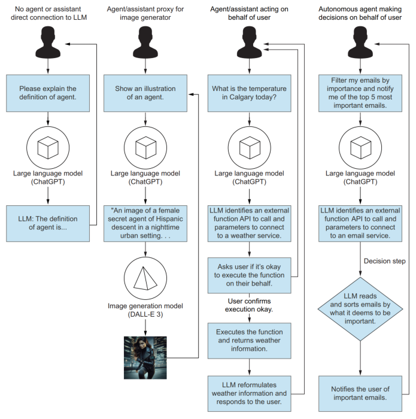
Multi-agent system có thể có nhiều agent độc lập làm việc và tương tác với nhau. VD - viết code vs tester
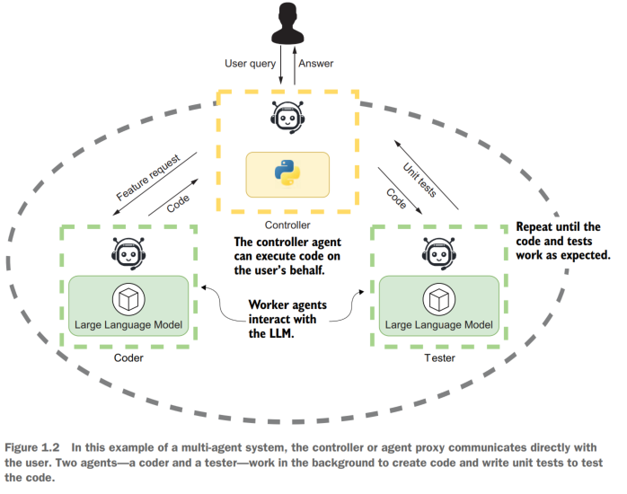
Mỗi agent cơ bản có 5 đặc điểm sau:
Profile & Persona: Đặc điểm của Agent, còn được gọi là
system prompt, là các hướng dẫn cho agent cách thức hoàn thành nhiệm vụ, phản hồi yêu cầu người dùng,...Actions & Tools: Các công cụ mà Agent có thể truy cập và sử dụng - ví dụ - khả năng tạo ảnh, thực hiện code, truy cập và tìm kiếm internet,...
Memory & Knowledge: Bộ nhớ và tri thức, bao gồm khả năng ghi nhớ lịch sử tương tác (bộ nhớ) và kho thông tin được quyền truy cập với các định dạng khác nhau như word, pdf, ...
Reasoning & Evaluation: Khả năng suy nghĩ và đánh giá giải pháp khác nhau
Planning & Feedback: Khả năng lập kế hoạch - có thể bao gồm cả việc yêu cầu feedback từ con người hoặc hoàn toàn tự động từ Agent.
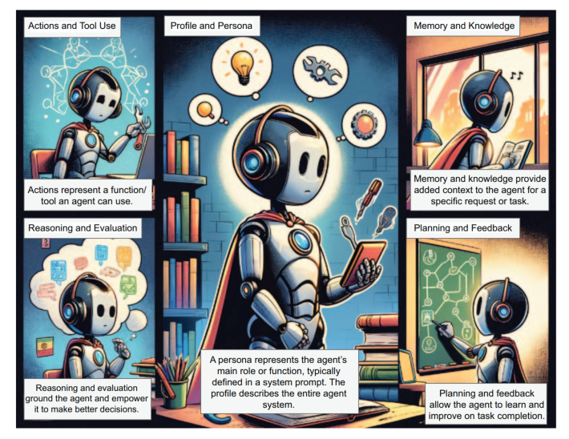
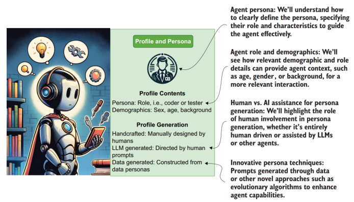
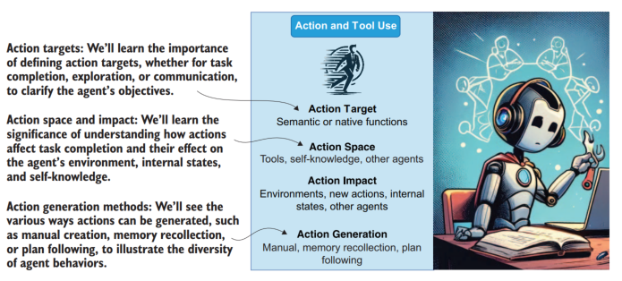
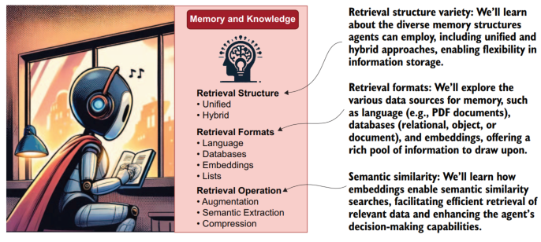
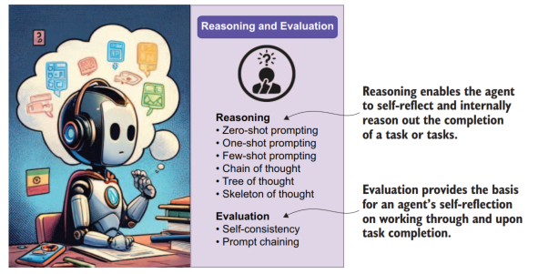
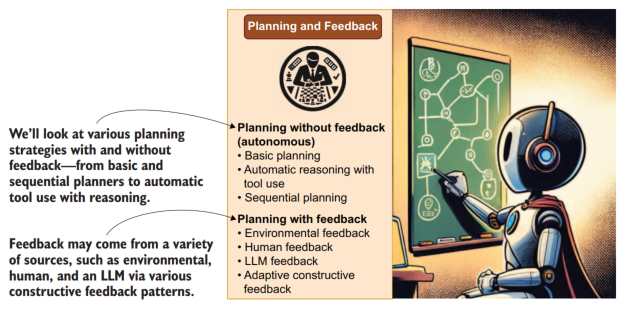
Với AI Agent, rất nhiều mảng công việc như dữ liệu, phát triển phần mềm có thể sẽ cần điều chỉnh và tái cấu trúc lại để cho phép sử dụng ngôn ngữ tự nhiên như là interface, cho phép tương tác với người dùng. Quá trình này sẽ tương tác với AI Interface (data, function & tool - external agent) để hoàn thành tác vụ cho người dùng.
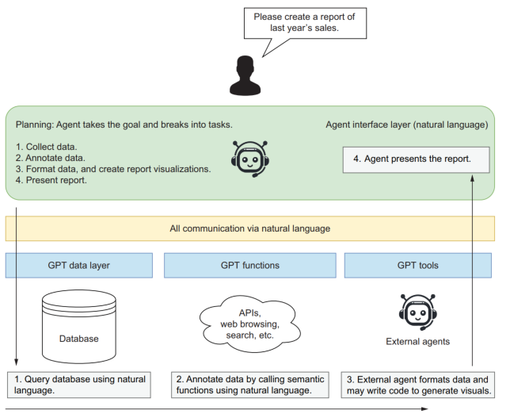
1.2. LLM#
Các mô hình ngôn ngữ lớn (Large Language Model) được phát triển bằng cách sử dụng các thuật toán GPT (Generative Pretrained Transformers). Các mô hình hình sẽ được sử dụng để tạo ra các content mới từ các content trước đó. Các kết quả dự báo này có sự khác biệt so với các mô hình predictive/classification thông thường.
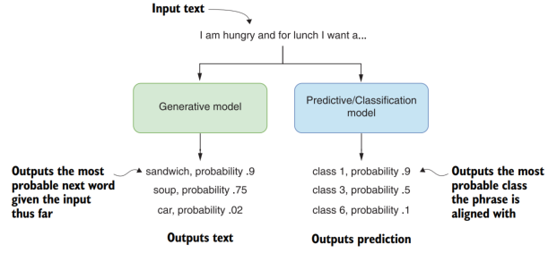
Bên cạnh đó, các mô hình LLM cũng có thể được tuning để tối ưu hóa hiệu quả sử dụng với một bộ dataset nhất đinh.
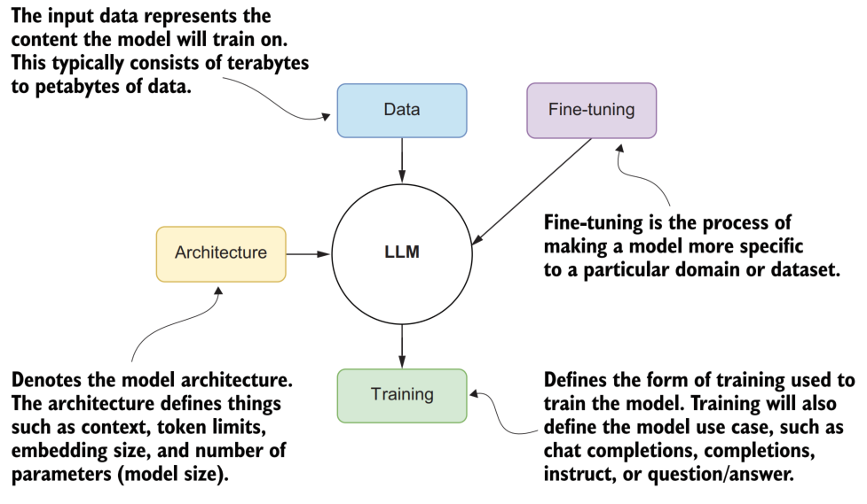
1.3. OpenAI API#
Với các mô hình ngôn ngữ lớn, việc tự xây dựng mô hình gần như là bất khả thi. Ta có thể sử dụng 2 cách chính:
Sử dụng mô hình mã nguồn mở và host tại local - các mô hình có thể sử dụng như Llama, Qwen, etc.
Sử dụng API dưới dạng SaaS - ví dụ OpenAI, Bedrock,...
Với sự phát triển mạnh mẽ của các công ty công nghệ, đặc biệt là OpenAI, ngày càng có nhiều đơn vị sử đụng OpenAI.
import os
from openai import OpenAI
# Package load environemnt variables from a .env file
from dotenv import load_dotenv
load_dotenv()
# Load the OpenAI API key from the environment variable
api_key = os.getenv('OPENAI_API_KEY')
if not api_key:
raise ValueError("No API key found. Please check your .env file.")
client = OpenAI(api_key=api_key)
def ask_chatgpt(user_message):
response = client.chat.completions.create(
model="gpt-4o",
messages=[{"role": "system",
"content": "You are a helpful assistant."},
{"role": "user", "content": user_message}],
temperature=0.7,
)
return response.choices[0].message.content
user = "What is the capital of Vietnam?"
response = ask_chatgpt(user)
print(response)
The capital of Vietnam is Hanoi.
Trong ví dụ trên, message có chứa 3 nhóm chức năng:
System role: Thông tin chứa các nguyên tắc và hướng dẫn cho AI
User role: Người dùng cuối & các câu hỏi (message) của người dùng
Assistant role: Câu trả lời của AI và tương tác với người dùng
Các thông tin về lịch sử tương tác có thể thể hiện như sau
[
{
"role": "system",
"content": "You are a helpful assistant."
},
{
"role": "user",
"content": "What is the capital of France?"
},
{
"role": "assistant",
"content": "The capital of France is Paris."
},
{
"role": "user",
"content": "What is an interesting fact of Paris."
}
],
1.4. Prompt Engineer#
Prompt Engineer là các kỹ thuật cho phép mô tả và hướng dẫn AI trả ra kết quả phù hợp nhất.
Khi viết prompt, cần lưu ý các điểm sau:
Thông tin cụ thể
Có kèm ngữ cảnh chi tiết
Mô tả các kết quả kỳ vọng
Thêm các ví dụ và độ dài, phong cách mong muốn

Các lưu ý hi viết prompt kèm ví dụ
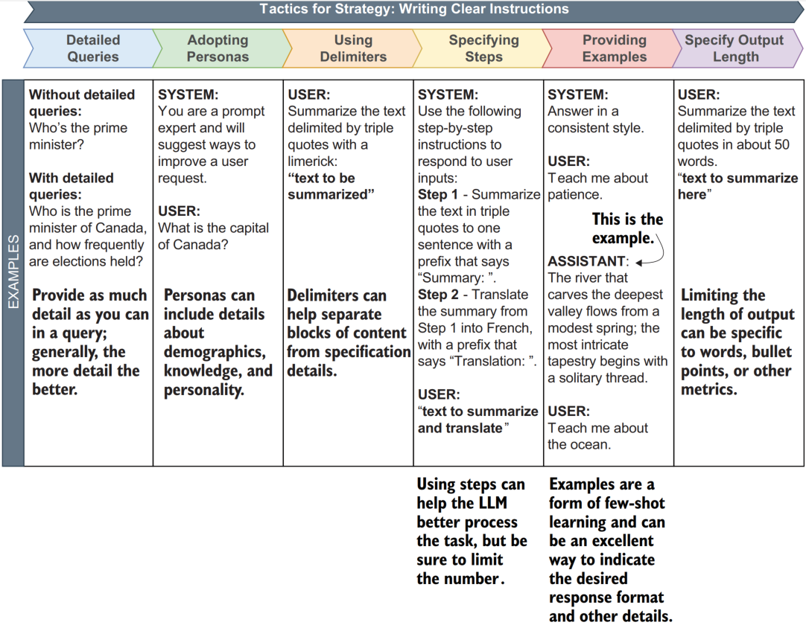
Khi sử dụng mô hình LLM, ta cần cân nhắc các yếu tố chính sau:
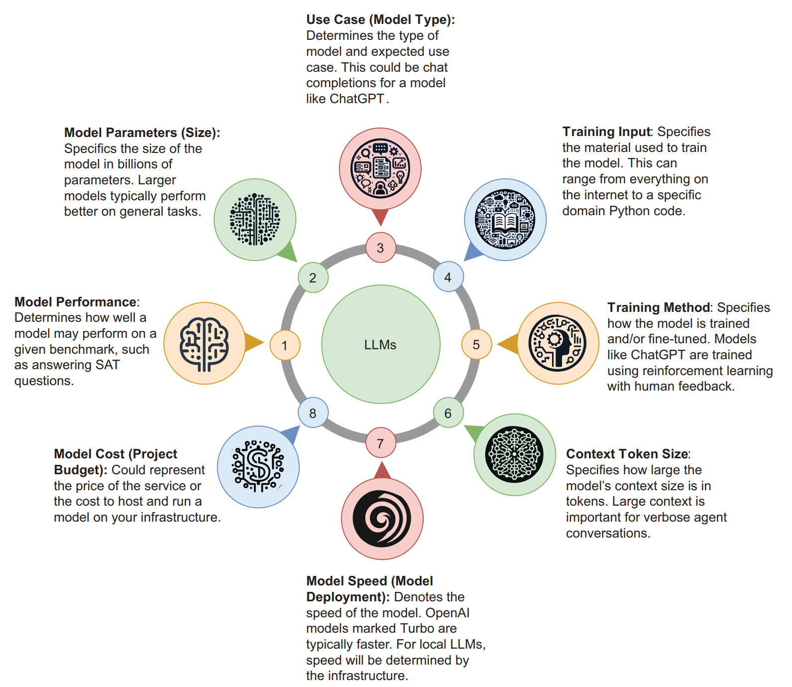
Trong thực tế, trước khi đi vào bước production, ta nên sử dụng các mô hình có hiệu năng cao để đảm bảo khả năng giải quyết đúng mục tiêu
1.5. Tài liệu tham khảo#
AI agent in actions - chương 1, 2, 3